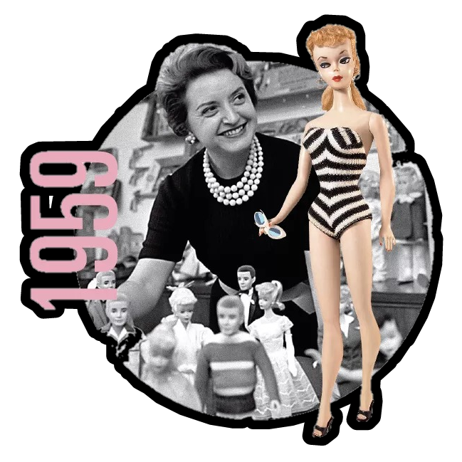
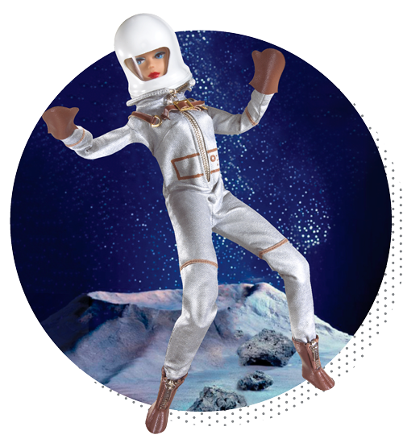

⠀⠀⠀⠀⠀⠀⠀⠀⠀⠀⠀⠀⠀⠀⠀⠀História da Barbie
⠀⠀⠀⠀⠀⠀⠀⠀⠀⠀⠀⠀⠀⠀⠀⠀PROCESSO DE CRIAÇÃO DA BONECA
⠀⠀⠀⠀⠀⠀⠀⠀⠀⠀⠀⠀⠀⠀⠀⠀No início dos anos 50, Ruth e o seu marido observavam o comportamento de sua filha Barbara, que brincava com bonecas de papel e as personificava como adultas, já que todos os bonecos fabricados nos Estados Unidos, eram representações de crianças.

Quando a criadora da Barbie viaja para a Europa, nove anos mais tarde, a ideia começa a ganhar forma. Ruth conhece a BildLilli, uma boneca alemã que tinha as proporções perfeitas para uma boneca adulta, o que levou a empreendedora a comprar três delas: a primeira para sua filha e as demais para servir de base para criar sua própria boneca.
Ao retornar para os Estados Unidos, Ruth redesenha a boneca com a ajuda do designer Jack Ryan e dá a ela o nome de sua filha Barbara, encurtado como Barbie. O novo produto foi lançado oficialmente na Feira Anual de Brinquedos de Nova York, por 3 dólares, no dia 9 de março de 1959, data que foi oficializada como o aniversário oficial da boneca. A introdução de Barbie ao mercado foi também uma quebra de estereótipos, pois, na época, a mulher se limitava a cuidar da casa e da família, enquanto o brinquedo era o contrário disso: Barbie era jovem, solteira e sem filhos.
Desde sua criação, diferentes modelos de Barbie foram produzidos. A princípio, havia duas versões dela, uma morena e outra loira. Depois, deixaram seu visual sendo loiro definitivamente. Com o passar do tempo, a boneca ganhou novas roupas, penteados e maquiagens, se tornando mais contemporânea. A moda dos últimos 40 anos, por exemplo, pode ser contada através dela e de sua coleção de estilos, já que ganhou vestidos exclusivos de grifes como Dolce&Gabbana, Calvin Klein, Versace e Giorgio Armani.
Em 1961, deu-se início ao desenvolvimento de seus relacionamentos, que contribuiram para evitar polêmicas de que a boneca era um símbolo sexual. O primeiro a ser criado foi o seu namorado Ken que, ao lado de Barbie, sempre acompanhou a moda da época. Em 1963, ela recebeu sua primeira amiga, a Midge, e, em 1964, Barbie recebeu uma irmã caçula, a Skipper. No decorrer dos anos, Barbie recebeu outras amigas e parentes. No entanto, hoje, as irmãs se reduzem em apenas três: Skipper, Stacie e Chelsea.
Em 1965, foi lançada a Barbie Astronauta, que foi à Lua antes mesmo do homem. Nesse período, surgem as primeiras bonecas com pernas dobráveis, uma inovação que passa a ser aplicada a todos os modelos produzidos desde então. Com o sucesso das vendas, em 1967, a Mattel entra na lista das 500 maiores empresas dos Estados Unidos.